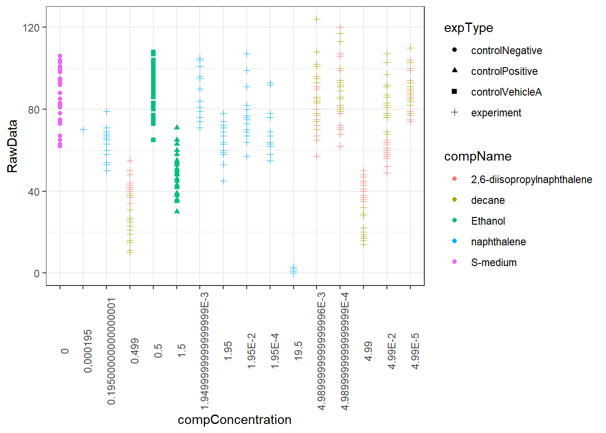

2 Effects of different compounds on C.elegans offspring
In this report I am trying to plot a dataset of different compounds on C. elegans offspring. This report is for showing my skills in R that I have acquired during courses in a data science for biology track.
To start off, I am loading the libraries that are used and reading the excel data into R.
# Loading libraries
library(tidyverse)
library(readxl)
library(here)
# Reading data into R
data <- read_excel(here(path = "Data/CE.LIQ.FLOW.062_Tidydata.xlsx"))
# Checking datatypes and variables.
str(data)After checking the datatypes of variables RawData, compName and compConcentration, these have numeric, character and again character as datatypes respectively. compConcentration should be numeric, or the plot would look like this:
data %>% ggplot(aes(x = compConcentration, y = RawData, colour = compName, shape = expType)) + geom_point() +
theme_bw() + theme(axis.text.x = element_text(angle = 90)) 
Because variable compConcentration is of character datatype, it is not plotted in the correct order.
# Changing datatypes
data$compName <- as.factor(data$compName)
data$compConcentration <- as.numeric(data$compConcentration)
# Making data a bit more readable by selecting fewer columns
data2 <- data %>% select(vialNr, dropCode, expType, expReplicate, RawData, compName, compConcentration, compUnit, compVehicle)
# Log10 of compConcentration and adding geom_jitter + geom_smooth to make plot more readable.
data2 %>% ggplot(aes(x = log10(compConcentration), y = RawData, colour = compName, shape = expType)) +
theme_bw() + geom_jitter(width = 0.2) +
labs(title = "Offspring C. elegans after incubation with decane, napthalene, \n2,6-diisopropylnapthalene, S-medium or ethanol",
x = "Log10 concentration component",
y = "Offspring amount")
Compared to the previous plot, here the variable compConcentration is converted to numeric (and also taken the log10 of). Geom_jitter is also used so datapoints don’t overlap too much.
The positive control in this experiment is ethanol, and the negative control is S-medium
# Take the average offspring per compound, per concentration
summary_data <- data2 %>% group_by(compName, compConcentration,expType) %>% summarise(gem = mean(RawData, na.rm = T))
# Take the average offspring count of the negative control
nc_gem <- summary_data$gem[summary_data$expType == "controlNegative"]
# Make a new column with normalised data, normalised by taking the fraction relative to the negative control, where the nc equals 1.0
summary_data <- summary_data %>% mutate(fractie = gem/nc_gem)
# Filtering out positive/negative controls, so they don't show up in the plot.
summary_plotting <- summary_data %>% filter(compName == "decane" | compName == "2,6-diisopropylnaphthalene" | compName == "naphthalene")
summary_plotting %>% ggplot(aes(x = log10(compConcentration), y = fractie, colour = compName)) +
geom_point() + geom_smooth() + theme_bw() + ylim(0,1.3) + labs(title = "Offspring C. elegans after treatment with decane, napthalene \nor 2,6-diisopropylnaphthalene",
x = "Log10 component concentration",
y = "Fraction offspring (relative to, negative control)") + guides(color = guide_legend("Component")) + scale_colour_manual(values = c("red","blue","darkgreen"))
In this plot the data is normalised relative to the negative control (S-medium), where offspring originating from C. elegans incubated in S-medium are equal to 1.0
Normalisation is done so the different compounds could be easily compared to the negative control, for which we know shouldn’t have an effect on offspring.
If we would look at if there is an actual statistical significant difference in offspring count for the different compound incubations, we would perform the following steps:
1: Shapiro wilk test on the different groups, to see if the data is normally distributed
2: If the data is normally distributed, also perform a Levene’s test, because the experimental design is unpaired.
3: Then perform unpaired T-tests.